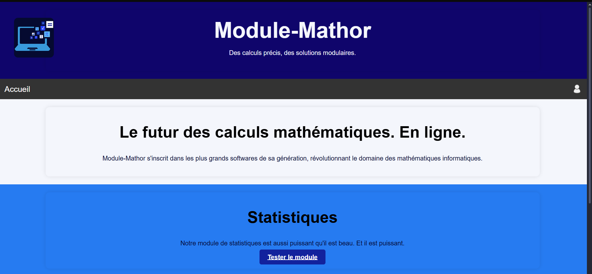

Module Mathor
Projet web en php consistant à calculer des variables. Ce site utilise une base de données pour stocker les utilisateurs ainsi que les données qu'ils calcules, toutes données importantes sont disponibles mais aussi crypter.